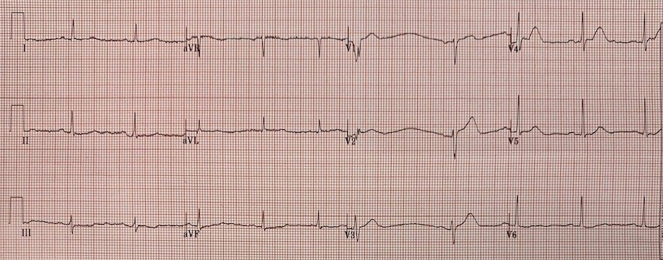
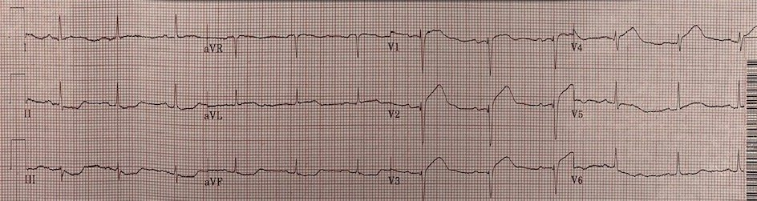
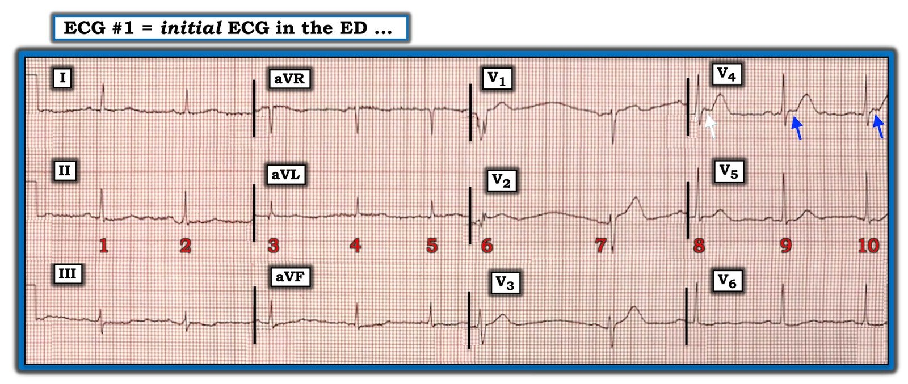

26/02/2020 — Phụ nữ 70 tuổi khó chịu ở ngực không liên quan gắng sức, không lan
Bản dịch tiếng Việt của bài "70 year old woman with non-exertional non-radiating chest discomfort" – Dr. Smith’s ECG Blog. Giữ nguyên toàn bộ 5 hình ảnh của bản gốc.
Ca này do một độc giả gửi đến:
“Tôi rất mong nhận được ý kiến của anh về diễn tiến điện tâm đồ này. Nữ, 71 tuổi, yếu tố nguy cơ duy nhất là tăng lipid máu, có cảm giác khó chịu ở ngực đơn độc, không liên quan đến gắng sức và không lan.”


Bạn nghĩ gì?
Trả lời của Smith:
Điện tâm đồ này có sóng T đối xứng (tối cấp) ở V2-V4. Đây là hình ảnh chẩn đoán tắc LAD.
Nếu bạn còn phân vân, hãy dùng công thức:
https://hqmeded-ecg.blogspot.com/2017/11/12-cases-of-use-of-3-and-4-variable.html (mười hai ca áp dụng công thức ba biến và bốn biến)
Tôi đã áp dụng công thức cho ca này sau khi đo được QTc là 440 ms.
Giá trị tính được là 19,73 (trên 18,2 là khá tốt để chẩn đoán tắc LAD.)
Ngay cả khi bạn đo QT là 411 ms, giá trị vẫn lớn hơn 18,2.
Độc giả viết tiếp:
“Tôi thấy ST chênh lên nhẹ ở aVL và chênh xuống nhẹ ở các chuyển đạo thành dưới, nên đã cho ghi lại điện tâm đồ 1 giờ sau.”


Điểm cần học:
Hãy dùng công thức để phân biệt tắc LAD kín đáo với ST chênh lên bình thường.

===================================
BÌNH LUẬN CỦA TÔI, bởi KEN GRAUER, MD (22/2/2020):
===================================
Ca này ngắn. Bệnh nhân là một phụ nữ 71 tuổi đến khám vì cảm giác khó chịu ở ngực. Câu trả lời súc tích của Smith đã tóm lược những điểm cốt yếu: “Điện tâm đồ này có sóng T đối xứng (tối cấp) ở V2 đến V4. Đây là hình ảnh chẩn đoán tắc LAD.”
- Tôi xin bổ sung 3 suy nghĩ về điện tâm đồ ban đầu mà tôi đã vẽ lại ở Hình 1.


SUY NGHĨ #1: Bản ghi này có một số vấn đề kỹ thuật. Chúng ta thấy 10 phức bộ QRST (tức là 3 góc nhìn cho mỗi nhát trong 10 nhát) — nhưng đáng tiếc là KHÔNG có dải nhịp chuyển đạo dài bên dưới bản ghi 12 chuyển đạo. Điều này có nghĩa là KHÔNG có cách nào để đối chiếu những gì ta thấy trên bản ghi 12 chuyển đạo với một dải nhịp chuyển đạo dài ghi đồng thời, trong đó mọi phức bộ QRS trên thất lẽ ra phải trông giống nhau, trừ khi bị biến đổi do dẫn truyền lệch hướng hoặc do nhiễu.
- Nhịp nền trên điện tâm đồ #1 là loạn nhịp xoang (tức là có một mức dao động nhất định của khoảng R-R giữa các nhát dẫn truyền từ xoang).
- Nhát #6 xuất hiện rất sớm. Nhát thứ 6 này trông giống một PVC ở chuyển đạo V1.
- Ở chuyển đạo V3, nhát #6 trông giống một nhát trên thất hơn nhiều. Nhát này hẹp ở chuyển đạo này — và sóng T trông giống hình dạng sóng T mà người ta chờ đợi ở một chuyển đạo V3.
- Tôi không thể quyết định nhát #6 trông như thế nào ở chuyển đạo V2 … Phức bộ QRS có biên độ nhỏ, và với tôi thì không có vẻ rộng — nhưng QRS của nhát #6 ở chuyển đạo V2 rõ ràng trông khác với QRS của nhát #7 ở chuyển đạo V2. Và, ở các chuyển đạo V1, V2, V3 chỉ có 2 nhát để lựa chọn …
- Nhận định của tôi — Tôi ngờ rằng có thể có nhiễu chồng lên phần đầu của nhát #6 ở chuyển đạo V1 (và có lẽ cả ở chuyển đạo V2). Dù vậy — chúng ta không thể chứng minh được điều gì — vì không có dải nhịp chuyển đạo dài ghi đồng thời.
- Lý do tôi tập trung vào nhát #6 — là vì 2/3 các dấu hiệu MẤU CHỐT trên điện tâm đồ này nằm ở chuyển đạo V2 và V3 — và bao giờ cũng nên dựa các nhận định quan trọng vào nhiều hơn một phức bộ QRS đơn lẻ. NẾU quả thật nhát #6 đến sớm là một PAC bị nhiễu làm biến dạng, chứ không phải một PVC — thì sóng ST-T của nhát #6 ở chuyển đạo V3 sẽ trông ít đáng lo ngại hơn nhiều.
- ĐIỀU CỐT LÕI — Điểm cần học thứ 1 mà tôi muốn nêu về bản ghi này — là khi dữ liệu bạn có bị hạn chế về mặt kỹ thuật — hãy LẤY dữ liệu tốt hơn. Tôi sẽ ngay lập tức Ghi lại điện tâm đồ. Lý tưởng nhất là điện tâm đồ ghi lại có một dải nhịp chuyển đạo dài bên dưới bản ghi 12 chuyển đạo — nhưng ngay cả khi không có dải nhịp ghi đồng thời — thì ít nhất các quyết định quan trọng cũng có thể dựa vào nhiều hơn một phức bộ đơn lẻ.
SUY NGHĨ #2: Bất kể mối lo ngại về vấn đề kỹ thuật mà tôi nêu ở Suy nghĩ #1 — người đọc phải mặc định (như Dr. Smith) rằng sóng T của nhát #7 dẫn truyền từ xoang ở chuyển đạo V2 và V3 là sóng T tối cấp cho đến khi chứng minh được điều ngược lại, ở người phụ nữ 71 tuổi có cảm giác khó chịu ở ngực này.
- Về mặt định lượng — Có thể đánh giá bản ghi này bằng Công thức của Dr. Smith (như ông đã bàn ở trên).
- Về mặt chủ quan — Sóng T ở cả chuyển đạo V2 lẫn chuyển đạo V3 đều cao hơn-mức-lẽ-ra-phải-có một cách không tương xứng + đầy đặn-hơn-mức-lẽ-ra-phải-có ở đỉnh + rộng-hơn-mức-lẽ-ra-phải-có ở đáy — mà ở một bệnh nhân đến khám vì cảm giác khó chịu ở ngực, điều này xác định các sóng T này là tối cấp cho đến khi bạn chứng minh được điều ngược lại.
SUY NGHĨ #3: Khi xem kỹ hơn chuyển đạo V4 — lại có một vấn đề kỹ thuật. Ở đây, ít nhất chúng ta có 3 nhát (tức là nhát #8, 9 và 10) để lựa chọn — nhưng có một vấn đề với phức bộ thứ 1 trong 3 phức bộ ( = nhát #8) mà ta thấy ở chuyển đạo V4.
- Góc gập dốc xuống sắc nét mà ta thấy ở đoạn ST ngắn (trước sóng T) của nhát #8 ở chuyển đạo V4 là không có thật (mũi tên TRẮNG). Việc phức bộ QRST thứ 1 này ở chuyển đạo V4 bị nhiễu làm biến đổi được củng cố bởi dấu hiệu đường nền bị nâng lên ở nhát #8 trên chuyển đạo V5. Điểm cần học thứ 2 mà tôi muốn nêu là việc đánh giá hình dạng sóng ST-T của nhát #8 ở chuyển đạo V4 có thể không đáng tin cậy.
- Dù vậy — chúng ta vẫn còn có được 2 phức bộ QRST hợp lệ ở chuyển đạo V4 (tức là nhát #9 và 10) — và KHÔNG nên có chút nghi ngờ nào rằng đoạn ST ngắn và thẳng bất thường (các mũi tên XANH ở chuyển đạo V4), chênh lên khoảng ~1 mm so với đường nền, với góc gập sắc nét tại chỗ nối giữa đoạn ST và sóng T, theo sau là các sóng T của nhát #9 và 10 ở chuyển đạo V4 cao hơn-mức-lẽ-ra-phải-có một cách không tương xứng + đầy đặn-hơn-mức-lẽ-ra-phải-có ở đỉnh + rộng-hơn-mức-lẽ-ra-phải-có ở đáy — là tối cấp cho đến khi bạn chứng minh được điều ngược lại. (Đúng vậy, sóng ST-T ở nhát #10 có bị cắt mất một phần — nhưng tôi nghĩ ta thấy đủ để xác nhận rằng hình dạng sóng ST-T ở nhát #9 trên chuyển đạo V4 là có thật).
ĐIỀU CỐT LÕI — Điều quan trọng là phải nhận ra những khiếm khuyết kỹ thuật trên bản ghi có thể cản trở việc đánh giá hình dạng sóng ST-T nhằm tìm các thay đổi cấp tính.
- Khi bạn thấy điều này — ngay lập tức ghi lại điện tâm đồ nếu cho rằng các vấn đề kỹ thuật có thể cản trở việc diễn giải.
- Dù vậy, bất chấp những khiếm khuyết kỹ thuật — vẫn có thừa bằng chứng trên điện tâm đồ #1 để chẩn đoán tắc LAD cấp (đúng như diễn giải của Dr. Smith, vốn đã được chứng minh là đúng qua điện tâm đồ thứ 2 ghi 1 giờ sau đó).